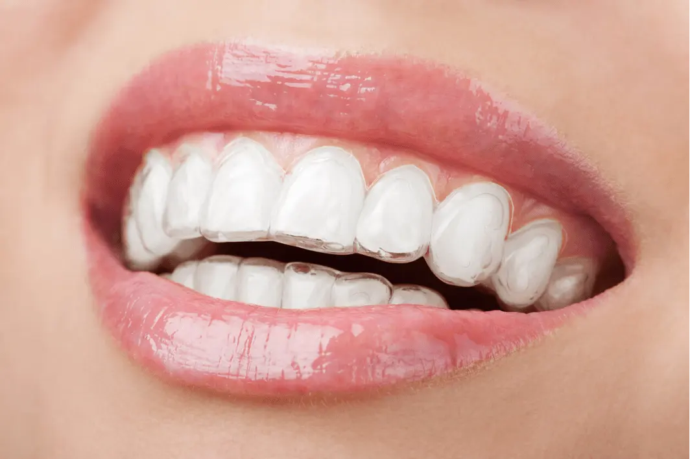
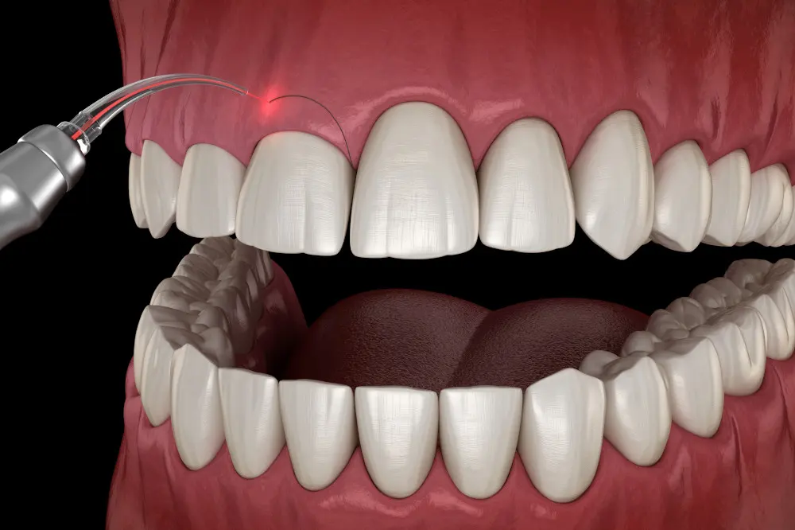
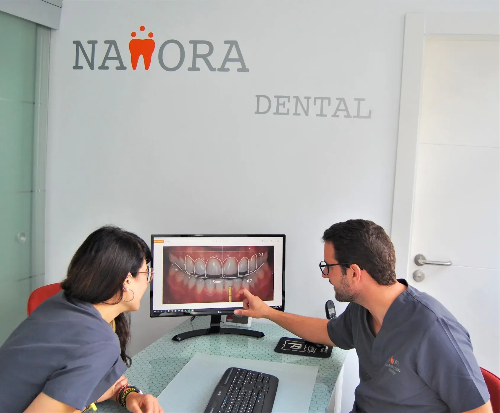
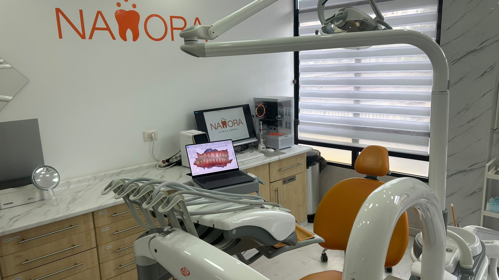
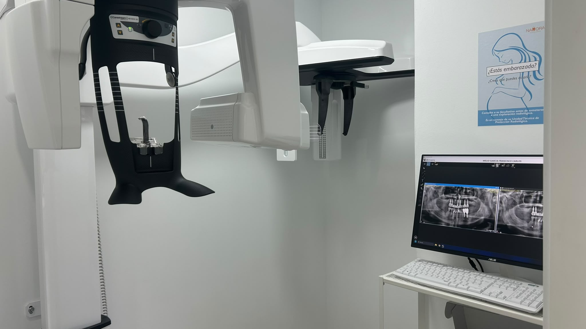
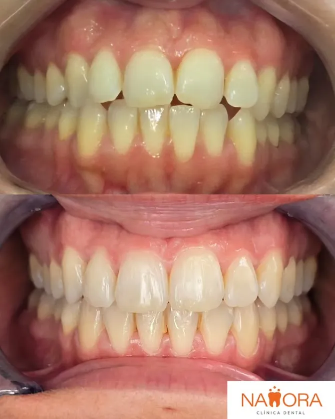

Escáner intraoral: qué aporta a un tratamiento dental moderno
El escáner intraoral permite tomar registros digitales de forma cómoda y precisa, reduciendo impresiones tradicionales en muchos casos.
Leer más →
Cuidamos tu salud bucodental con una atención cercana, tratamientos personalizados y una experiencia cómoda desde la primera visita.
Ver tratamientos dentales ↓En Clínica Dental Namora, en Santa Cruz de Tenerife, combinamos atención cercana, estética dental y planificación personalizada para que cada visita sea cómoda, clara y eficaz.
Primera visita
Te orientamos con una valoración personalizada para encontrar la opción más adecuada para tu sonrisa.
En Namora cuidamos tu sonrisa con un trato humano, explicaciones claras y tratamientos personalizados en Santa Cruz de Tenerife.

Te escuchamos, resolvemos tus dudas y te acompañamos en cada paso del tratamiento.
Cada sonrisa es diferente. Diseñamos planes personalizados según tus necesidades.
Buscamos resultados naturales, funcionales y pensados para que sonrías con confianza.
Un espacio cómodo y profesional para cuidar tu salud bucodental cerca de ti.
Cuidamos cada detalle para que tu visita sea cómoda, tranquila y profesional desde que entras hasta que finaliza tu tratamiento.

Un espacio moderno, luminoso y equipado para realizar tratamientos dentales con comodidad y precisión.

Un gabinete preparado para cuidar tu sonrisa en un entorno profesional, cercano y agradable.

Una zona cómoda y tranquila para que cada paciente se sienta acompañado desde el primer momento.

Tecnología digital que permite tomar registros precisos de forma rápida, cómoda y sin molestias.
Resultados obtenidos mediante tratamientos personalizados, planificación digital y odontología enfocada en estética y funcionalidad.
Planificación digital y carillas directas de composite para mejorar forma, proporción y armonía dental.
Ver tratamiento →
Tratamiento con alineadores transparentes para una sonrisa más alineada, estética y funcional.
Ver tratamiento →
Remodelado de encía para mejorar proporción entre dientes y encías en casos seleccionados.
Ver tratamiento →
En Clínica Dental Namora creemos que una buena experiencia dental empieza por escuchar. Dedicamos el tiempo necesario a entender tus necesidades y explicarte cada tratamiento de forma clara y cercana.
Nuestro objetivo es ayudarte a conseguir una sonrisa sana, funcional y natural en un entorno cómodo y profesional.
Combinamos atención cercana, tecnología y planificación personalizada para que cada paciente reciba el tratamiento más adecuado.
Queremos que te sientas cómodo desde la primera visita, con explicaciones claras y una atención personalizada.
Te acompañamos durante todo el tratamiento para ayudarte a decidir con tranquilidad.
Utilizamos herramientas modernas para mejorar la precisión y la experiencia del paciente.
Buscamos sonrisas sanas, funcionales y estéticas, respetando la armonía de cada paciente.
Confianza y claridad
Te explicamos cada paso con calma para que puedas tomar decisiones con seguridad.
Reseñas de pacientes que destacan nuestro trato cercano, profesionalidad y confianza.
“Acudí por un frenillo corto de mi bebé. El trato ha sido fabuloso y tras la intervención se preocuparon por la evolución. Solo tengo palabras de agradecimiento.”
“Estoy súper contenta de haber dado con una clínica tan cercana y profesional. La clínica es acogedora y los profesionales han sido espectaculares conmigo.”
“Si buscas una clínica de confianza donde sentirte seguro, Namora es tu lugar. Profesionales claros, transparentes y muy cercanos.”
Artículos sencillos y útiles para resolver dudas frecuentes sobre salud bucodental, prevención, tecnología y estética dental.

Consejos sencillos para llegar a tu primera cita con tranquilidad, saber qué información traer y aprovechar mejor la valoración inicial.

El escáner intraoral permite tomar registros digitales de forma cómoda y precisa, reduciendo impresiones tradicionales en muchos casos.
Leer más →
Los alineadores transparentes permiten corregir la posición dental de forma discreta y cómoda en muchos casos adultos.
Leer más →Estamos ubicados en una zona céntrica de Santa Cruz de Tenerife, con fácil acceso para nuestros pacientes.
Dirección
38006 · Santa Cruz de Tenerife
Llámanos o escríbenos por WhatsApp para reservar tu cita en Clínica Dental Namora.
C. Ramón y Cajal, 59, 38006 Santa Cruz de Tenerife
Estamos en C. Ramón y Cajal, 59, 38006 Santa Cruz de Tenerife.
Ofrecemos odontología general, higiene dental, implantes, ortodoncia invisible, estética dental, periodoncia, endodoncia, diseño de sonrisa y bruxismo/ATM.
Sí, puedes escribir al WhatsApp 660 39 91 80 o llamar al 822 61 28 70.
Sí, contamos con escáner intraoral y herramientas de planificación digital para mejorar comodidad y precisión.